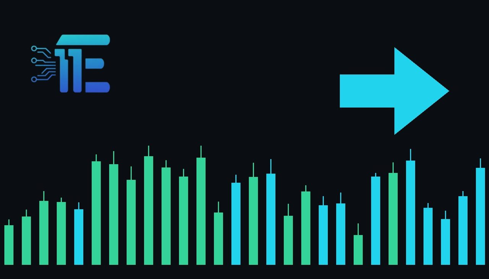

Gold Steady After October Jobs Report Shows Mixed Momentumមាសមានស្ថិរភាពក្រោយរបាយការណ៍ការងារខែតុលាបង្ហាញសន្ទុះចម្រុះ
XAU/USD impact: ◆ Mixedផលប៉ះពាល់លើ XAU/USD: ◆ ចម្រុះ

Gold prices held steady following the latest October jobs report, recovering from initial losses. This price action matters for XAU/USD as traders gauge shifting employment data and potential interest rate trajectories.
តម្លៃមាសបានរក្សាស្ថិរភាពបន្ទាប់ពីរបាយការណ៍ការងារខែតុលា ដោយបានងើបឡើងវិញពីការធ្លាក់ចុះដំបូង។ សកម្មភាពតម្លៃនេះមានសារៈសំខាន់សម្រាប់ XAU/USD ខណៈអ្នកជួញដូរវាយតម្លៃទិន្នន័យការងារនិងទិសដៅអត្រាការប្រាក់។
Gold futures opened at $4,074.30 per troy ounce on Monday, November 9, 2026, marking a 0.6% decline from the previous Friday's opening level. Despite the softer start, market activity picked up during the session, with spot prices climbing toward $4,118.30 per troy ounce by mid-morning. This steady performance follows the release of the October jobs report, which has driven varied reactions across global financial markets as participants evaluate the health of the broader economy.
កិច្ចសន្យាអនាគតមាសបានបើកជួញដូរនៅតម្លៃ 4,074.30 ទី9 ខែវិច្ឆិកា ឆ្នាំ2026 ដែលធ្លាក់ចុះ 0.6% ពីតម្លៃបើកកាលពីថ្ងៃសុក្រសប្តាហ៍មុន។ ទោះបីជាមានការចាប់ផ្តើមធ្លាក់ចុះបន្តិចក៏ដោយ សកម្មភាពទីផ្សារបានងើបឡើងវិញក្នុងអំឡុងពេលវគ្គជួញដូរ 4,118.30 ដុល្លារអាមេរិកក្នុងមួយអុញទើយនៅពេលព្រឹក។ ការសម្តែងភាពស្ងប់ស្ងាត់នេះកើតឡើងបន្ទាប់ពីការចេញផ្សាយរបាយការណ៍ការងារខែតុលា ដែលបានជំរុញឱ្យមានប្រតិកម្មចម្រុះនៅទូទាំងទីផ្សារហិរញ្ញវត្ថុពិភពលោក ខណៈអ្នកចូលរួមទីផ្សារវាយតម្លៃពីសុខភាពនៃសេដ្ឋកិច្ចទូទៅ។
The primary transmission channel for gold during employment data releases involves shifts in the US dollar, Treasury yields, and interest rate expectations. When employment figures point to a resilient labor market, the likelihood of monetary tightening or sustained higher interest rates tends to pressure non-yielding bullion. Conversely, any underlying signs of labor softening or economic friction can weigh on the US dollar and reduce real yields, thereby enhancing the appeal of gold as a safe-haven asset and inflation hedge.
ច្រកបញ្ជូនចម្បងសម្រាប់មាសក្នុងអំឡុងពេលចេញផ្សាយទិន្នន័យការងារគឺពាក់ព័ន្ធនឹងការផ្លាស់ប្តូរតម្លៃដុល្លារអាមេរិក ទិន្នផលប័ណ្ណបំណុល និងការរំពឹងទុកលើអត្រាការប្រាក់។ នៅពេលដែលតួលេខការងារបង្ហាញពីទីផ្សារការងារដ៏រឹងមាំ លទ្ធភាពនៃការរឹតបន្តឹងផ្នែករូបិយវត្ថុ ឬការរក្សាអត្រាការប្រាក់ខ្ពស់មានទំនោរដាក់សម្ពាធលើមាស។ ផ្ទុយទៅវិញ សញ្ញាណាមួយនៃការទន់ខ្សោយផ្នែកការងារ ឬបញ្ហាសេដ្ឋកិច្ចអាចទម្ងន់ធ្ងន់លើដុល្លារអាមេរិក និងកាត់បន្ថយទិន្នផលជាក់ស្តែង ដែលធ្វើឱ្យការទាក់ទាញរបស់មាសជាទ្រព្យសម្បត្តិមានសុវត្ថិភាព និងការការពារអតិផរណាកើនឡើង។
A balanced outlook reveals distinct scenarios for market participants. On one hand, continued economic resilience and hawkish signals regarding interest rates would typically support the US dollar and pressure gold prices downward. On the other hand, persistent economic uncertainties or cooling labor trends would likely weaken the currency and suppress yields, providing renewed upward momentum for XAU/USD.
ទស្សនវិស័យដែលមានតុល្យភាពបង្ហាញពីសេណារីយ៉ូផ្សេងៗគ្នាសម្រាប់អ្នកចូលរួមទីផ្សារ។ ម្យ៉ាងវិញទៀត ភាពធន់នៃសេដ្ឋកិច្ចបន្ត និងសញ្ញាអត់ឱនទាក់ទងនឹងអត្រាការប្រាក់ជាធម្មតានឹងគាំទ្រដល់ដុល្លារអាមេរិក និងដាក់សម្ពាធលើតម្លៃមាសចុះក្រោម។ ម្យ៉ាងវិញទៀត ភាពមិនប្រាកដប្រជាផ្នែកសេដ្ឋកិច្ច ឬនិន្នាការការងារត្រជាក់ចុះទំនងជានឹងធ្វើឱ្យខ្សោយរូបិយវត្ថុ និងទិន្នផល ដែលផ្តល់នូវកម្លាំងរុញច្រើនឡើងវិញសម្រាប់ XAU/USD។
Market participants should closely monitor upcoming economic releases, central bank commentary, and subsequent employment metrics to gauge directional trends. Observing shifts in the US dollar index and benchmark Treasury yields will remain critical for anticipating short-term movements in the precious metals market.
អ្នកចូលរួមទីផ្សារគួរតែតាមដានយ៉ាងដិតដល់នូវការចេញផ្សាយសេដ្ឋកិច្ចនាពេលខាងមុខ ការអត្ថាធិប្បាយរបស់ធនាគារកណ្តាល និងរង្វាស់ការងារបន្តបន្ទាប់ ដើម្បីវាស់វែងនិន្នាការទិសដៅ។ ការសង្កេតមើលការផ្លាស់ប្តូរនៃសន្ទស្សន៍ដុល្លារអាមេរិក និងទិន្នផលប័ណ្ណបំណុលគោលនឹងនៅតែមានសារៈសំខាន់សម្រាប់ការរំពឹងទុកនូវចលនារយៈពេលខ្លីនៅក្នុងទីផ្សារលោហៈមានតម្លៃ។
Key takeawaysចំណុចសំខាន់ៗ
- Gold prices opened lower at $4,074.30 per troy ounce before recovering to $4,118.30 following the October jobs report.
- តម្លៃមាសបានបើកទាបនៅតម្លៃ 4,074.30 ដុល្លារអាមេរិកក្នុងមួយអុញទើយ មុនពេលងើបឡើងដល់ 4,118.30 ដុល្លារអាមេរិក បន្ទាប់ពីរបាយការណ៍ការងារខែតុលា។
- Employment data directly influences XAU/USD through shifts in the US dollar, real yields, and central bank interest rate expectations.
- ទិន្នន័យការងារមានឥទ្ធិពលផ្ទាល់លើ XAU/USD តាមរយៈការផ្លាស់ប្តូរតម្លៃដុល្លារអាមេរិក ទិន្នផលជាក់ស្តែង និងការរំពឹងទុកអត្រាការប្រាក់របស់ធនាគារកណ្តាល។
- Traders continue to monitor economic indicators and currency movements to assess the balance between rate pressures and safe-haven demand.
- អ្នកជួញដូរបន្តតាមដានសូចនាករសេដ្ឋកិច្ចនិងចលនារូបិយវត្ថុ ដើម្បីវាយតម្លៃតុល្យភាពរវាងសម្ពាធអត្រាការប្រាក់និងតម្រូវការសុវត្ថិភាព។
Original commentary by THE MARKET CODE, based on public reporting from Yahoo! Finance: GC=F News. Written with the help of AI. Educational only, not financial advice.
មតិវិភាគដើមដោយ THE MARKET CODE ផ្អែកលើការរាយការណ៍សាធារណៈពី Yahoo! Finance: GC=F News។ សរសេរដោយមានជំនួយពី AI។ មាតិកាអប់រំប៉ុណ្ណោះ មិនមែនជាដំបូន្មានហិរញ្ញវត្ថុទេ។